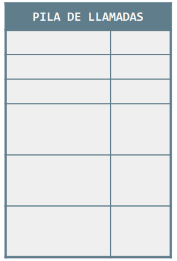

La pila de llamadas se aloja en la memoria RAM, y está compuesta por los denominados registros de activación. Cada uno de estos registros...
- Tiene asociada una llamada dada a un método, la del main incluida.
- Contiene las variables locales del método y sus parámetros, junto con el valor que se les ha asignado a estos últimos al realizar la llamada (parámetros actuales).
Un método sólo puede usar:
- La información contenida en su correspondiente registro de activación de la pila de llamadas.
- Los datos contenidos en las variables globales.
Más ejemplos...
Pila de llamadas con 3 métodos


